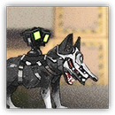
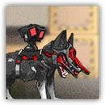

游击队猎犬 Guerrilla Hound
近战 物理；普通 感染生物
|  |
穿戴轻量乌萨斯装甲的基础游击队战犬。拥有一定的防御性能，行动速度很快。 |
游击队猎犬丨Guerrilla Hound
中型野兽（感染生物），无阵营
AC 13
先攻 +1（11）
HP 26（4d8+8）
速度 40尺
| 调整 | 豁免 | ||
|---|---|---|---|
| 力量 | 13 | +1 | +1 |
| 智力 | 3 | -3 | -3 |
| 调整 | 豁免 | ||
|---|---|---|---|
| 敏捷 | 14 | +2 | +4 |
| 感知 | 12 | +1 | +1 |
| 调整 | 豁免 | ||
|---|---|---|---|
| 体质 | 14 | +2 | +2 |
| 魅力 | 7 | -2 | -2 |
技能 察觉+3，隐匿+4
抗性 毒素，寒冷
感官 黑暗视觉30尺，被动察觉13
语言 无
CR 1（XP 200；PB +2）
特质 Traits
集群战术 Pack Tactics。游击队猎犬至少有一个未处于失能的盟友在目标生物5尺内时，它对该生物发动的攻击检定有优势。
敏锐嗅听觉 Keen Hearing and Smell。游击队猎犬依赖听觉或嗅觉进行的感知（察觉）检定具有优势。
动作 Actions
多重攻击 Multiattack。游击队猎犬发动两次啃咬攻击
啃咬 Bite。近战攻击检定：+4，触及5尺。命中：6（1d8+2）点穿刺伤害。
游击队猎犬 Pro | Guerrilla Hound Pro
近战 物理；普通 感染生物
|  |
穿戴轻量乌萨斯装甲的高级游击队战犬。拥有一定的防御性能，行动速度很快，攻击欲望比游击队战犬更强。 |
游击队猎犬 Pro丨Guerrilla Hound Pro
中型野兽（感染生物），无阵营
AC 13
先攻 +1（11）
HP 45（7d8+14）
速度 40尺
| 调整 | 豁免 | ||
|---|---|---|---|
| 力量 | 13 | +1 | +1 |
| 智力 | 4 | -2 | -2 |
| 调整 | 豁免 | ||
|---|---|---|---|
| 敏捷 | 16 | +3 | +5 |
| 感知 | 13 | +1 | +1 |
| 调整 | 豁免 | ||
|---|---|---|---|
| 体质 | 15 | +2 | +4 |
| 魅力 | 8 | -1 | -1 |
技能 察觉+3，隐匿+4
抗性 毒素，寒冷
感官 黑暗视觉30尺，被动察觉13
语言 无
CR 2（XP 200；PB +2）
特质 Traits
集群战术 Pack Tactics。游击队猎犬至少有一个未处于失能的盟友在目标生物5尺内时，它对该生物发动的攻击检定有优势。
敏锐嗅听觉 Keen Hearing and Smell。游击队猎犬依赖听觉或嗅觉进行的感知（察觉）检定具有优势。
动作 Actions
多重攻击 Multiattack。游击队猎犬发动两次啃咬攻击
啃咬 Bite。近战攻击检定：+5，触及5尺。命中：8（2d4+3）点穿刺伤害。